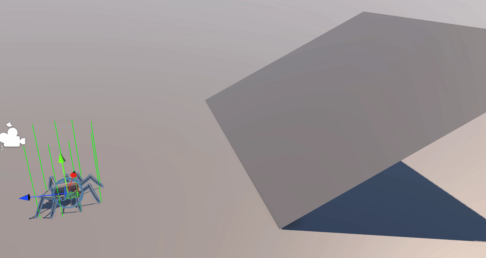

At the GLU, we occasionally have a week that we can work on a small passion project, as long as it could be completed in a week and you'd learn something from it.
This was made in one of the first of such weeks. Already having had such a boost in programming experience, I decided to step up my game and try making a spider from scratch using procedural animations.

I got down to the basics first; setting up the rig. This is mainly done with aim constraints, similar to how knees work.
Then came leg adjustment. Legs aren't procedural if they don't adjust by themselves. Each leg had their own origin set up, and will adjust back to said origin once the distance has reached further then a set value.
This was fun and all, but this was purely the legs; the body's movement was prescripted for automation and demonstration.

I then got to work on a script that managed the legs in a more realistic way. the legs have been registered to this manager, which was then linked to an adjustable limit of how many legs can be off the floor at once, preventing the spider from magically levitating.
What was probably the hardest was height adjustment. Procedural often gets used for automatically adjusting the legs to more dynamic surfaces instead of a simple flat floor.
Using raycasts, each leg checks above and below the origin, checking for an active floor to place its feet on. It primarily relies on the raycasts upward, but has raycasts downward as well.
For a one-week project, I am very proud of the quality I've gotten it to. A next goal would be tilting the body along with its rotation, but I have yet to find a proper approach to it. A proper remodel would be necessary in any case.